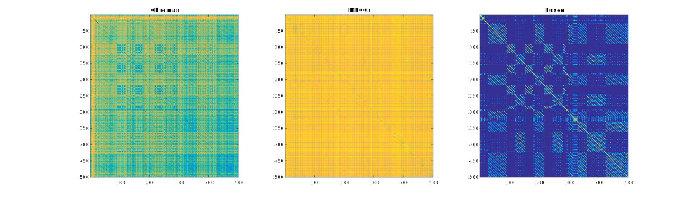
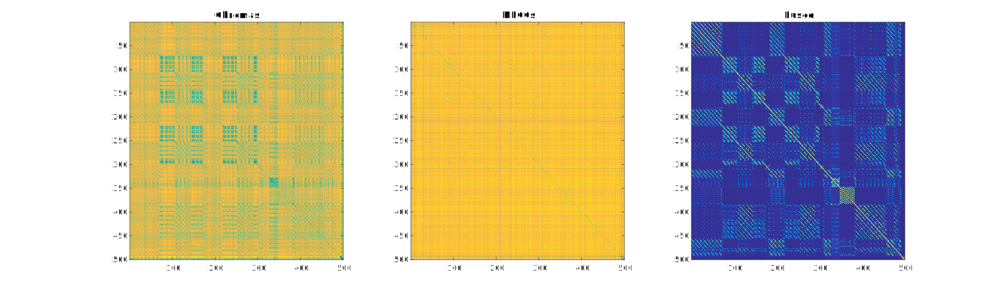
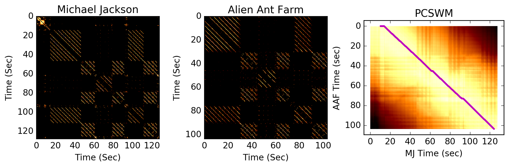
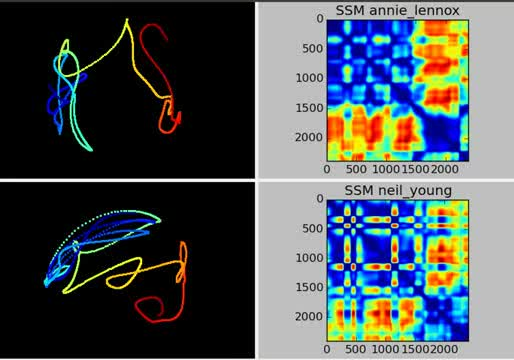

1) Feature Fusion for Clean Structure Graphs
Example Self-Similarity (Adjacency Matrices): Smooth Criminal
Michael Jackson

Alien Ant Farm

Zooming In..

Automatically Synchronizing Cover Songs
Put on your headphones...one song is in one ear, other song is in the other
2) Loop Ditty (Music As A Shape)
Cover song snippets make shapes which are near isometries:

3) Rhythms And Twisted Spaces